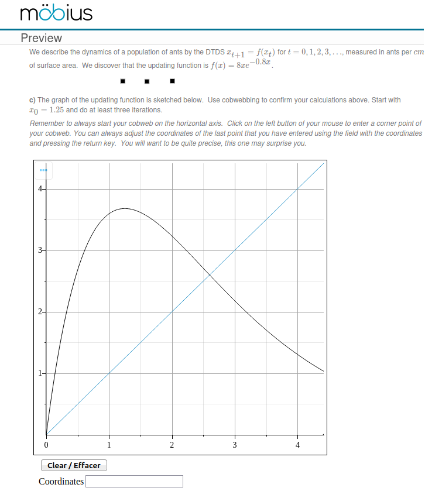

Math Apps
Notre but principal est d'expliquer comment créer un Graded Math App qui peut être inclus dans une question pour Möbius. Naturellement, les Math Apps peuvent aussi être utilisés dans Maple. La seule différence est la façon dont le Math App est démarré et les arguments qui lui sont fournis. Nous allons revenir sur ce sujet à la fin du document.
Autres exemples
Le lecteur peut trouver d'autres exemples de Math Apps sur le site des Math Apps qui est accessible en choisissant l'option Tools → Math Apps (item 1 dans la figure ci-dessous) du menu qui se trouve au haut dans la fenêtre de Maple.

Pour lire le code du Math Apps qui a été choisi, il suffit de cocher la boite qui précède l'étiquette Editable qui se trouve au bas de la fenêtre pour le Math Apps qui a été choisi (item 2 de la figure ci-dessous).

Introduction
Supposons que l'on veuille construire un Math App où, étant données une fonction et une condition initiale, les étudiants doivent tracer un graphe en forme de toile d'araignées associé aux itérations de la fonction à partir de la condition initiale. Le Math App va aussi corriger l'exactitude du graphe en forme de toiles d'araignées selon un nombre prédéterminé d'itérations et le degré de précision requis.
La partie d'une question pour Möbius qui inclus le Math App est affichée ci-dessous.

Pour tracer le graphe en forme de toile d'araignée, les étudiants cliquent sur la surface de dessin avec le bouton gauche de leur sourie pour ajouter de façon successive les coins de leur graphe. Le Math App dessine une ligne droite entre les points qui se suivent pour tracer le graphe en forme de toile d'araignées. Les étudiants peuvent utiliser une zone de texte pour ajuster les coordonnées du point qu'ils viennent d'ajouter à la surface de dessin. Les étudiants peuvent cliquer sur le bouton Clear / Effacer pour recommencer s'ils ne sont pas satisfait de leur travail.
Le lecteur devrait consulter le site (en anglais) pour Möbius pour apprendre comment créer un question dans Möbius qui inclus un Math App.
Nous affichons ci-dessous le Math App comme il apparaît lorsqu'il est utilisée dans Maple.

Le Math App comprend les composantes suivantes:
- une surface de dessin (nommée Plot0),
- un bouton Clear / Effacer (nommé Button0),
- un bouton Correction (nommé Button1) avec une étiquette Grade (nommée Label1) et une zone de texte (nommée TextArea1),
- un bouton Solution (nommé Button2), et
- une étiquette Coordinates (nommée Label0) avec une zone de texte (nommée TextArea0) pour les coordonnées du dernier point ajouté à la surface de dessin.
La fonction de chaque composante n'est pas difficile à deviner.
- La fonction du bouton Clear / Effacer est clair. Il est utilisé par les étudiants qui veulent recommencer au début à tracer leur graphe en forme de toile d'araignées.
- Les étudiants qui clique sur le bouton Correction obtiennent l'évaluation de leur graphe en forme de toile d'araignée et leur note apparaît dans la zone de texte TextArea1 à cet fin. Cette zone de texte ne peut pas être éditée. Le bouton Correction, l'étiquette Grade et la zone de texte qui lui est associée devraient être cachés quand le Math App est inclus dans une question pour Möbius. Évidemment, nous ne voulons pas que les étudiants puissent vérifier si leur réponse est bonne avant de soumettre leur devoir.
- Les étudiants qui cliquent sur le bouton Solution obtiennent la solution de la question. Pour des raisons évidentes, ce bouton devrait être caché quand le Math App est inclus dans une question pour Möbius.
- Les étudiants peuvent utiliser la zone de texte TextArea0 associée au bouton Coordinates pour ajuster les coordonnées du point qu'ils viennent d'ajouter à la surface de dessin.
Il y a un grand choix de composantes qui peuvent être utilisé pour créer un Math App. Présentement, la liste contient Button, Toggle Button, Combo Box, Check Box, Radio Button, Text Area, Label, List Box, Slider, Rotary Gauge, Volume Gauge, Meter, Dial, Plot, Mathematical Expression, Shortcut, Microphone, Speaker, Data Table and Video Player. Ils se trouvent tous dans le menu à gauche dans la fenêtre de Maple.

Nous expliquons dans la section suivante comment ajouter des composantes pour créer un Math App.
Code du Math App
Dans le menu qui se trouve au haut de la fenêtre de Maple, on choisit Edit → Starting Code (items 7 et 8 dans la figure ci-dessous).

pour obtenir la fenêtre suivante.

Naturellement, cette fenêtre est vide quand nous y accédons pour la première fois. C'est l'emplacement pour la partie principale du code du Math App. Nous avons déjà écrit ce code Nous expliquons en détail les éléments de ce code.
-
Puisque que les fonctions SetProperty and GetProperty sont souvent utilisées, il est pratique de définir deux macros pour simplifier le code.
macro(SP = DocumentTools:-SetProperty); macro(GP = DocumentTools:-GetProperty);
-
La commande Actions := module() indique le début du module qui sera utilisé par le Math App. La commande export déclare comme étant accessible globalement toutes les procédures du module qui sont utilisées par les composantes du Math App.
Actions := module() export Click, Refresh, Drag, EndDrag, DoPlot, Reset, Grade, InitParams, Check, Answer;
-
Il y a aussi une déclaration des variables qui sont locales au module mais peuvent être utilisées par toutes les procédures du module. Les tableaux sont initialisés par des tableaux vides.
local A, B, Err, Nbr, F, X0, MV, Pts:=Array(1..0), NbrGood :=0, GRAPH, SOL := Array(1..0), myskyblue := ColorTools:-Color([.196, .6, .8]);
-
La procédure InitParams est utilisé par Möbius pour initialiser le Math App quand la question du devoir sur Möbius est lue pour la première fois par l'étudiant.
# The function InitParams() is called when run inside Mobius. InitParams := proc( { a:=0, b:=1, err:=0.05, nbr:=3, f:= (1/2)*x + 1/4, x0 := 0.2, mv:= 0, flag1 := 0 } ) local graph1, graph2, graph3, j, xn, yn; if (flag1 = 0) then SP(Button1, visible, false); SP(Button2, visible, false); SP(Label1, visible, false); SP(TextArea1, visible, false); else SP(Button1, visible, true); SP(Button2, visible, true); SP(Label1, visible, true); SP(TextArea1, visible, true); end if; A := a; B := b; Err := err; Nbr := nbr; F := f; X0 := x0; if ( mv = 0 ) then MV := B; else MV := mv; end if; xn := X0; yn := 0; ArrayTools[Append](SOL, [xn,yn]); yn := evalf(subs(x=xn, F)); ArrayTools[Append](SOL, [xn,yn]); for j from 1 to Nbr-1 do xn := yn; ArrayTools[Append](SOL, [xn,xn]); yn := evalf(subs(x=xn, F)); ArrayTools[Append](SOL, [xn,yn]); end do; graph1 := plot([[A,A],[B,B]], color=myskyblue, gridlines=true, view=[A..B,0..MV]): graph2 := plot( F, x=A..B, color=black, view=[A..B,0..MV]): # graph3 is used only to ensure that the horizontal axis will be displayed. graph3 := plots[pointplot]([[A,0],[B,0]], symbol=point, color=black): GRAPH := plots[display]([graph1, graph2, graph3]); Reset(); end proc;Les paramètres initiaux sont énumérés ci-dessous.
- Quand le Math App est inclus dans une question d'un devoir qui est corrigé, flag1 est défini comme étant 0 pour cacher le bouton Correction et l'étiquette et zone de texte TextArea1 qui lui sont associé, et le bouton Solution comme nous avons expliqué précédemment.
- A et B sont les extrémités de l'intervalle [A,B],
- Err est l'erreur tolérée pour l'emplacement des points dessinés par les étudiants.
- Nbr est le nombre de points (et donc d'itérations) qui sont utilisés pour corriger la réponse des étudiants. Ceci inclus la condition initiale.
- F est la fonction qui doit être itérée.
- X0 est la condition initiale.
- MV est le maximum en valeur absolue de F. Il est généralement préférable de laisser au code le soin de calculer de cette valeur.
La variable SOL est initialisée avec tous les points qui forment le graphe en forme de toile d'araignées incluant la condition initiale à (X0,0}.
Le dessin GRAPH qui fait partie du Math App se compose de trois dessins superposés. Le dessin graph1 contient la droite diagonale \(y = x\). Le dessin graph2 contient le graphe de la fonction F sur l'intervalle [A,B]. Le dessin graph3 contient l'axe des \(x\)o. Ce troisième dessin est pour être certain que l'axe horizontal est affiché et couvre toute l'intervalle [A,B].
- La procédure suivante est Click.
C'est la procédure qui est exécutée quand un étudiant clique sur la
surface de dessin Plot0 pour dessiner un point.
Click := proc() local x, y; x := GP('Plot0', 'clickx'); y := GP('Plot0', 'clicky'); ArrayTools[Append](Pts, [x,y]); SP(TextArea0, value, [evalf[6](x),evalf[6](y)]); DoPlot(); end proc;Cette procédure fait trois choses. Premièrement, elle obtient les coordonnées \(x\) et \(y\) du point que l'étudiant veux dessiner. Puis, la procédure ajoute ces coordonnées à la variable Pts. Finalement, la procédure dessine sur la surface de dessin Plot0 le nouveau point et une droite à partir du point précédent jusqu'au nouveau point si cela est nécessaire.
Nous devons associer cette procédure à la surface de dessin Plot0 autrement elle ne sera pas qu'elle doit faire appel à la procédure Click. Pour faire cette association, nous allons sur l'affichage du Math App dans Maple et cliquons sur la surface de dessin Plot0. Nous obtenons alors le menu suivant qui se trouve à droit dans la fenêtre de Maple.

Après avoir cliqué sur le bouton Edit Click Code (item 9 dans la figure ci-dessus), nous obtenons la fenêtre suivante où nous insérons le code qui est exécuté quand un étudiant clique sur la surface de dessin.

Au départ, cette fenêtre contient un code par défaut comme, par exemple, with(DocumentTools): ... ou Use DocumentTools in .... Ce code doit être effacé car il ne fonctionne pas dans Möbius. Ces deux commandes fonctionnent bien dans Maple mais rentrent en conflit avec le code utilisé par Möbius. Pour notre Math App, il suffit d'insérer la commande suivante.
DocumentTools[Do](Actions:-Click() );
Plus de code peut être ajouté mais les variable définies dans le Starting Code ne sont pas accessibles.
-
Les deux procédures suivantes sont Drag et EndDrag
Drag := proc() local x, y, N; x := GP('Plot0', 'endx'); y := GP('Plot0', 'endy'); N := numelems(Pts); Pts[N] := [x,y]; SP(TextArea0, value, [evalf[6](x),evalf[6](y)]); DoPlot(); end proc; EndDrag := proc() return NULL; end proc;Comme la procédure Click, la procédure Drag fait trois choses. Premièrement, elle obtient les nouvelles coordonnées \(x\) et \(y\) du dernier point que l'étudiant a dessiné après que l'étudiant l'ait traîné. Puis, la procédure modifie la Pts en remplaçant les vieilles coordonnées du dernier point que l'étudiant a dessiné par les nouvelles coordonnées. Finalement, la procédure dessine sur la surface de dessin Plot0 le nouveau point et dessine de nouveau une droite à partir du point précédent jusqu'au nouveau point si cela est nécessaire.
La procédure EndDrag ne fait rien.
Comme nous avons fait avec la procédure Click, nous devons associer les procédures Drag et endDrag à la surface de dessin à l'aide cette fois ci des items Edit Dragged Code et Edit Drag End Code respectivement dans le menu qui se trouve à droite dans la fenêtre de Maple (items 10 et 11 respectivement dans la figure qui précède la figure précédente). Il suffit d'insérer la commande
DocumentTools[Do](Actions:-Drag() );
dans la fenêtre fournie en cliquant sur Edit Dragged Code et la commande
DocumentTools[Do](Actions:-endDrag() );
dans la fenêtre fournie en cliquant sur Edit Drag End Code.
Puisque la procédure endDrag ne fait rien, nous aurions pu avoir simplement inséré un commentaire dans la fenêtre fournie en cliquant sur Edit Drag End Code et avoir ignoré complètement la procédure endDrag. C'est ce qui est fait dans la fenêtre fournie en cliquant sur Edit Hover Code (item 12 dans la figure qui précède la figure précédente) comme il est illustré ci-dessous.

-
La procédure Refresh est associée à la zone de texte TextArea0 associée à l'étiquette Coordinates. Les étudiants peuvent modifier les cordonnées du point qu'ils viennent tout juste de dessiner en écrivant les coordonnées qu'ils veulent que ce point ait dans la zone de texte. Les coordonnées doivent être dans le format [x,y] (Les crochets / parenthèses carrées sont utilisées).
Refresh := proc() local x, y, N, coord; coord := parse(GP('TextArea0','value')); x := coord[1]; y := coord[2]; if ( is(x < A) or is(x > B) ) then return NULL; end if; N := numelems(Pts); Pts[N] := [x,y]; DoPlot(); end proc;Cet procédure fait quatre choses. Premièrement, elle obtient les nouvelles coordonnées \(x\) and \(y\) soumissent par l'étudiant. Il y a une simple test pour s'assurer que la coordonnée \(x\) est dans l'intervalle [A,B]. Puis, la procédure modifie la Pts en remplaçant les vieilles coordonnées du dernier point que l'étudiant a dessiné par les nouvelles coordonnées. Finalement, la procédure dessine sur la surface de dessin Plot0 le nouveau point et dessine de nouveau une droite à partir du point précédent jusqu'au nouveau point si cela est nécessaire.
Pour associer cette procédure à la zone de texte TextArea0 pour l'étiquette Coordinates, nous allons sur l'affiche du Math App dans Maple et cliquons sur la zone de texte associée à l'étiquette Coordinates. Nous obtenons le menu suivant qui se trouve à droit dans la fenêtre dans Maple.

En cliquant sur le bouton Edit Content Change Code (item 13 dans la figure ci-dessus), Nous obtenons la fenêtre suivante où nous insérons le code qui est exécuté quand un étudiant insère des coordonnées dans la zone de texte et presse la touche Enter.

Dans le cas présent, nous insérons la commande suivante.
DocumentTools[Do](Actions:-Refresh() );
- La procédure DoPlot n'est pas
directement associée à une composante du Math App mais elle
est utilisée par les procédures qui sont associées à des composantes
du Math App. Cette procédure dessine le graphe en forme de
toile d'araignées à l'aide des points fournis par un étudiant.
Ces points sont les coins du graphe en forme de toile d'araignée de
l'étudiant.
DoPlot := proc() local vertices, edges; vertices := plots[pointplot](Pts, symbol=solidcircle, symbolsize=10, color=blue): if ( numelems(Pts) > 1 ) then edges := plot(Pts, color=blue); SP(Plot0, value, plots[display]([GRAPH, vertices, edges])); else SP(Plot0, value, plots[display]([GRAPH, vertices])); end if; end proc;Comme nous avons mentionné précédemment, cette procédure ne trace pas juste les points fournis par les étudiants mais aussi les lignes droites qui joignent les points qui se suivent.
-
La procédure Reset est associée au bouton Clear / Effacer. Elle efface le graphe en forme de toile d'araignées dessiné par les étudiants et réinitialise la surface de dessin à son état initial. Cette procédure efface aussi le contenu des zones de texte associées aux étiquettes Coordinates et Grade.
Reset := proc() Pts := Array(1..0); NbrGood := 0; SP(Plot0, value, GRAPH); SP(TextArea0, value, ""); SP(TextArea1, value, ""); end proc;
Comme nous avons vu précédemment, pour associer cette procédure au bouton Clear / Effacer, nous allons à l'affichage du Math App dans Maple et cliquons sur le bouton pour obtenir le menu qui se trouve à droit dans la fenêtre de Maple En cliquant sur le bouton Edit Click Code dans le menu à droite, nous obtenons la fenêtre pour insérer le code qui est exécuté quand un étudiant clique sur le bouton Clear / Effacer. Nous avons inséré la commande suivante.
DocumentTools[Do](Actions:-Reset() );
-
Quand le Math App est inclus dans une question que les étudiants peuvent utiliser pour se pratiquer, l'enseignant peut donner accès au bouton Solution que les étudiants peuvent utiliser pour obtenir la solution. La procédure suivante est associée à ce bouton.
Answer := proc() Reset(); Pts := SOL; DoPlot(); end proc;
La procédure fait trois choses. Premièrement, elle efface la surface de dessin et la réinitialise à son état initiale, elle efface aussi les zones de texte. Puis, la procédure initialise la variable Pts, qui est utilisée pour tracer le graphe en forme de toile d'araignées, avec les coordonnées exactes des points qui forment le graphe en forme de toile d'araignées. Finalement, la procédure dessine le graphe en forme de toile d'araignée.
Les étapes pour associer cette procédure au bouton Solution sont les mêmes que les étapes pour associer la procédure Clear à son bouton. La seule différence est que le code qui est inséré dans la fenêtre que nous obtenons après avoir cliqué sur le bouton Edit Click Code est la commande suivante.
DocumentTools[Do](Actions:-Answer() );
-
La procédure Check détermine lesquelles des point dessinés par un étudiant sont corrects. La procédure retrace aussi le graphe en forme de toile d'araignées soumit par l'étudiant où les éléments du graphe qui sont corrects sont dessinés en vert et ceux qui sont incorrects sont dessinés en rouge. Cette procédure est utilisée par la procédure Grade qui est présentée plus bas.
Check := proc() local N1, N2, j, J:=0, k, pt, d, indices, goodEdges:=Array(1..0), badEdges:=Array(1..0), goodPts:=Array(1..0), badPts:=Array(1..0), badP, goodP; N1 := 2*Nbr; indices := Array(1..N1); N2 := numelems(Pts); NbrGood := 0; for k from 1 to N1 do if ( k <= N2 ) then pt := Pts[k]; d := sqrt((SOL[k][1]-pt[1])^2 + (SOL[k][2]-pt[2])^2); if ( is(d < Err) ) then NbrGood := NbrGood + 1; indices[k] := 1; end if; else break; end if; end do; for j from 1 to N1 do if ( j <= N2 ) then if ( indices[j] = 1 ) then ArrayTools[Append](goodPts, Pts[j]); if ( j > 1 ) then if ( J = 1 ) then ArrayTools[Append](goodEdges, plot([Pts[j-1],Pts[j]], color=green)); else ArrayTools[Append](badEdges, plot([Pts[j-1],Pts[j]], color=red)); end if; end if; J := 1; else ArrayTools[Append](badPts, Pts[j]); if ( j > 1 ) then ArrayTools[Append](badEdges, plot([Pts[j-1],Pts[j]], color=red)); end if; J := 0; end if; else break; # ArrayTools[Append](badPts, SOL[j]); # if ( j-1 = N2 ) then # ArrayTools[Append](badEdges, plot([Pts[N2],SOL[j]], color=red)); # else # ArrayTools[Append](badEdges, plot([SOL[j-1],SOL[j]], color=red)); # end if; end if; end do; badP := plots[pointplot](badPts,symbol= diagonalcross, symbolsize=15, color=red); goodP := plots[pointplot](goodPts,symbol= solidcircle, symbolsize=10, color=green); SP(Plot0, value, plots[display]([GRAPH, goodP, badP, seq(goodEdges[i],i=1..numelems(goodEdges)),seq(badEdges[i],i=1..numelems(badEdges)) ])); end proc;La première boucle compte le nombre points qui sont bons et enregistre leur position dans la variable Pts. Un point dessiné par une étudiant est dénoté bon si la distance Euclidienne de ce point au vrai point correspondant du graphe en forme de toile d'araignées est inférieur à l'erreur tolérée. La deuxième boucle détermine les segments de droites qui sont bons (ceux entre deux bons points qui se suivent) et ceux qui sont mauvais. Finalement, la surface de dessin est dessinée de nouveau avec le graphe en forme de toile d'araignées de l'étudiant où les bons éléments sont en vert et les mauvais en rouge.
La section de code qui a été mis en commentaire peut être pour obtenir une correction complète qui utilise le graphe en toile d'araignées qui est requis dans la question; c'est-à-dire, pas seulement limité aux points que les étudiants ont tracés. Cette portion du code ne devrait pas être utilisée si l'intention est d'inclure le Math App dans une question pour Möbius qui utilise How did I do?. Nous ne voulons pas que les étudiants utilisent How did I do? pour obtenir la solution complète.
-
La procédure Grade est la procédure utilisée par Möbius pour évaluer la question quand elle est soumise. Cette procédure est aussi utilisée par How did I do? dans Möbius. De plus, cette procédure est aussi associée au bouton Correction quand les étudiants peuvent utiliser ce bouton dans un devoir de pratique.
Grade := proc() local Nbr2; Check(); Nbr2 := 2*Nbr; if ( NbrGood > 3*Nbr/2 ) then SP(TextArea1, value, evalf(NbrGood/Nbr2)); return evalf(NbrGood/Nbr2); else SP(TextArea1, value, 0); return 0; end if; end proc;Une note de 0 est donnée si moins de 3/4 des points dessinés par l'étudiant (sur un total requis de Nbr points) sont bons. La note est affichée dans la zone de texte TextArea1 associée au bouton Correction. La note est aussi retournée par cette procédure. C'est la valeur utilisée par Möbius.
-
Nous terminons le code du module avec l'énoncé suivant.
end module;
-
Il y a deux lignes de plus après l'énoncé précédent.
# Actions:-InitParams( flag1 = 1 ); macro(SP = SP, GP = GP);
Pour exécuter le Math App dans Maple, la ligne # Actions:-InitParams(... ne doit pas être misse en commentaire. Le seul argument de Actions:-InitParams() qui a été redéfini est la variable flag1 mais les autres arguments peuvent aussi être redéfinis Nous posons flag1=1 pour obtenir les boutons et zone de texte qui sont cachés.
Pour être plus pratique quand il est utilisé dans Maple, des zones de texte pour changer la fonction qui doit être itérée, la condition initiale, ... devraient être ajoutées au Math App. Ces composantes peuvent être cachées quand le Math App est inclus dans une question pour Möbius. C'est présentement très malcommode d'avoir à modifier les arguments de Actions:-InitParams() dans le starting code à chaque fois que nous voulons utiliser le Math App dans Maple avec des fonctions différentes, des conditions initiales différentes, ....
La ligne macro(SP = SP, GP = GP); est optionnelle mais il est toujours bon d'effacer les macros que nous avons créer.
Nous ne devons surtout pas oublier de sauvegarder notre ouvrage quand nous avons terminé de construire notre Math App. Le Math App décrit dans ce document est appelé UO_DDS_cobweb.mw. Il peut être téléchargé en cliquant avec le bouton droit de la sourie et ensuite en choisissant Save link as ... → Save file .